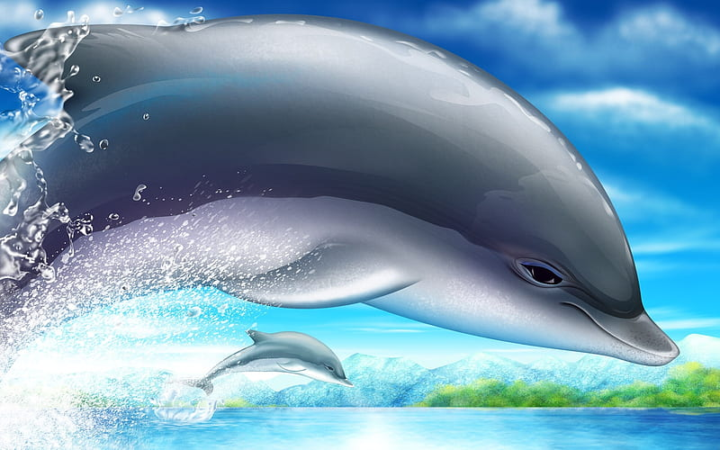
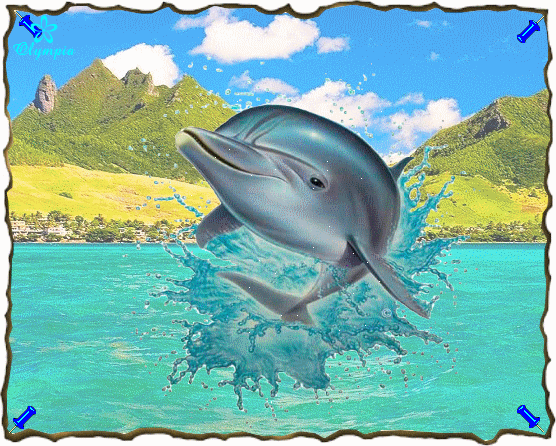
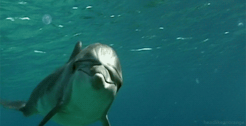

Bienvenu

Le Dauphin n'est pas un poisson mais un mammifère marin qui vit dans toutes les mers du globe terrestre. Il suit les bancs de poissons pour se nourrir.
Son dos est noir et son ventre blanc. Sa peau est unie et lisse, ce qui lui permet de nager à une vitesse allant jusqu'à 44 km heure.
Article

L'animal possède une peau lisse relativement souple. Selon les espèces, il mesure de 1,70 à 4 mètres de long, pour un poids variant entre 70 et 400 kg.
A l'intérieur de son bec (appelé rostre) se trouve de nombreuses petites dents pointues qui lui servent de support pour attraper une proie.
Article

Le dauphin possède une particularité : il a une respiration volontaire et doit “penser” à respirer en remontant régulièrement à la surface de l'eau pour replonger ensuite en apnée.
C'est pourquoi le mammifère ne dort jamais complètement : quand une partie de son cerveau se repose, une autre continue de fonctionner.